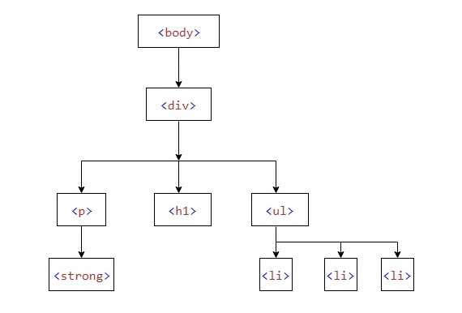

JQuery traversing, which means "move through", are used to "find" (or select) HTML elements based on their relation to other elements.
The image below illustrates an HTML page as a tree (DOM tree). With jQuery traversing, you can easily move up (ancestors), down (descendants) and sideways (siblings) in the tree, starting from the selected (current) element. This movement is called traversing - or moving through - the DOM tree.

An ancestor is a parent, grandparent, great-grandparent, and so on.
A descendant is a child, grandchild, great-grandchild, and so on.
Siblings share the same parent.
An ancestor is a parent, grandparent, great-grandparent, and so on.
With jQuery you can traverse up the DOM tree to find ancestors of an element.
Three useful jQuery methods for traversing up the DOM tree are:
The parent() method returns the direct parent element of the selected element.
This method only traverse a single level up the DOM tree.
$(document).ready(function(){
$("span").parent().css({ color: "red", border: "2px solid red" });
});
The parents() method returns all ancestor elements of the selected element, all the way up to the document's root element (<html>).
$(document).ready(function(){
$("span").parents().css({ color: "red", border: "2px solid red" });
});
You can also use an optional parameter to filter the search for ancestors.
The following example returns all ancestors of all <span> elements that are <ul> elements:
$(document).ready(function(){
$("span").parents("ul").css({ color: "red", border: "2px solid red" });
});
The parentsUntil() method returns all ancestor elements between two given arguments.
The following example returns all ancestor elements between a <span> and a <div> element:
$(document).ready(function(){
$("span").parentsUntil("div").css({ color: "red", border: "2px solid red" });
});
Example:
With jQuery you can traverse down the DOM tree to find descendants of an element.
A descendant is a child, grandchild, great-grandchild, and so on.
Two useful jQuery methods for traversing down the DOM tree are:
The children() method returns all direct children of the selected element.
This method only traverses a single level down the DOM tree.
The following example returns all elements that are direct children of each <div> elements:
$(document).ready(function(){
$("div").children().css({ color: "red", border: "2px solid red" });
});
You can also use an optional parameter to filter the search for children.
The following example returns all <p> elements with the class name "first", that are direct children of <div>:
$(document).ready(function(){
$("div").children("p.first").css({ color: "red", border: "2px solid red" });
});
The find() method returns descendant elements of the selected element, all the way down to the last descendant.
The following example returns all <p> elements that are descendants of <div>:
$(document).ready(function(){
$("div").find("span").css({ color: "red", border: "2px solid red" });
});
The following example returns all descendants of <div>:
$(document).ready(function(){
$("div").find("*").css({ color: "red", border: "2px solid red" });
});
Example:
p (child) span (grandchild)
p (child) span (grandchild)
With jQuery you can traverse sideways in the DOM tree to find siblings of an element.
Siblings share the same parent.
There are many useful jQuery methods for traversing sideways in the DOM tree:
The siblings() method returns all sibling elements of the selected element.
The following example returns all sibling elements of <h2> :
$(document).ready(function(){
$("h2").siblings().css({ color: "red", border: "2px solid red" });
});
You can also use an optional parameter to filter the search for siblings.
The following example returns all sibling elements of <h2> that are <p> elements:
$(document).ready(function(){
$("h2").siblings("p").css({ color: "red", border: "2px solid red" });
});
The next() method returns the next sibling element of the selected element.
The following example returns the next sibling of <h2>:
$(document).ready(function(){
$("h2").next().css({ color: "red", border: "2px solid red" });
});
The nextAll() method returns all next sibling elements of the selected element.
The following example returns all next sibling elements of <h2>:
$(document).ready(function(){
$("h2").nextAll().css({ color: "red", border: "2px solid red" });
});
The nextUntil() method returns all next sibling elements between two given arguments.
he following example returns all sibling elements between a <h2> and a <h6> element:
$(document).ready(function(){
$("h2").nextUntil("h6").css({ color: "red", border: "2px solid red" });
});
The prev(), prevAll() and prevUntil() methods work just like the methods above but with reverse functionality.
They return previous sibling elements (traverse backwards along sibling elements in the DOM tree, instead of forward).
Example:
p
spanp
Filter method allow you to select a specific element based on its position in a group of elements.
The first() method returns the first element of the specified elements.
The following example selects the first <div> element:
$(document).ready(function(){
$("div").first().css("background-color", "red");
});
The last() method returns the last element of the specified elements.
The following example selects the last <div> elements:
$(document).ready(function(){
$("div").last().css("background-color", "red");
});
The eq() method returns an element with a specific index number of the selected elements.
The index numbers start at 0, so the first element will have the index number 0 and not 1.
The following example selects the second <p> element (index number 1):
$(document).ready(function(){
$("p").eq(1).css("background-color", "red");
});
The filter() method lets you specify a criteria.
Elements that do not match the criteria are removed from the selection, and those that match will be returned.
The following example returns all <p> elements with class name "intro":
$(document).ready(function(){
$("p").filter("#div3").css("background-color", "red");
});
The not() method returns all elements that do not match the criteria.
Tip: The not() method is the opposite of filter().
The following example returns all <p> elements that do not have class name "intro":
$(document).ready(function(){
$("p").not(".intro").css("background-color", "red");
});
Example:
A paragraph in a #div1.
A paragraph in a #div2.
A paragraph in a #div3.
A paragraph in a #div4.